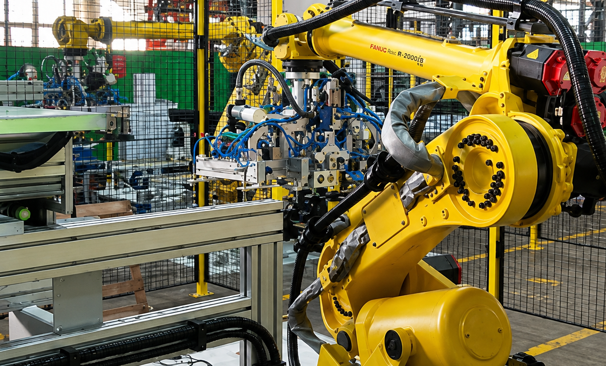

Developed the complete automation software for a FANUC robotic cell designed for the automatic handling of solar panels in a high-precision manufacturing environment.
Designed and programmed the Siemens PLC logic to coordinate communication between the robot, sliding table, and machines ensuring synchronized and reliable operation.
Implemented a computer vision solution to detect and locate solar panels with high positional accuracy, enabling precise robotic pick-and-place operations..
Integrated Keyence laser sensors with the robotic system to measure the distance between the gripper and the solar panels, improving positioning accuracy and collision avoidance.
Commissioned and optimized the complete automation cell by integrating the robot, PLC, computer vision system, sensors, and production machinery into a fully automated manufacturing process.